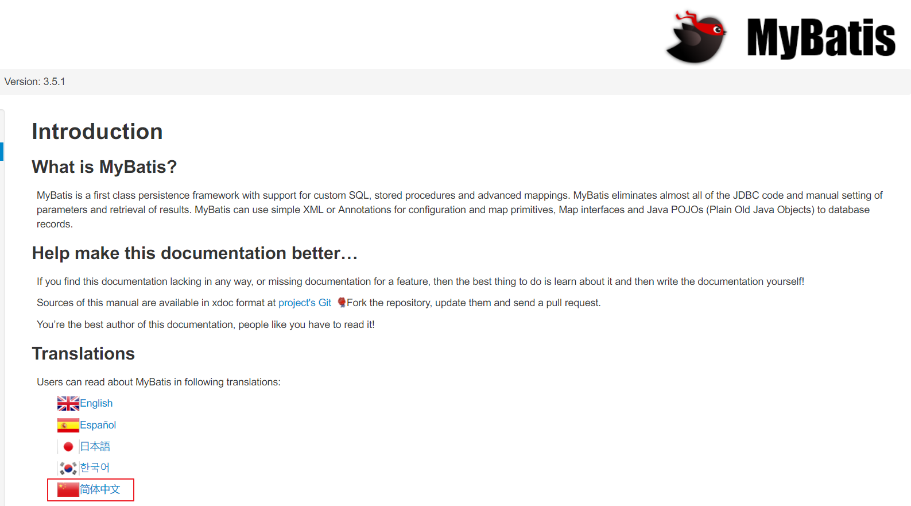
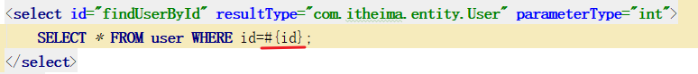
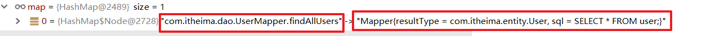
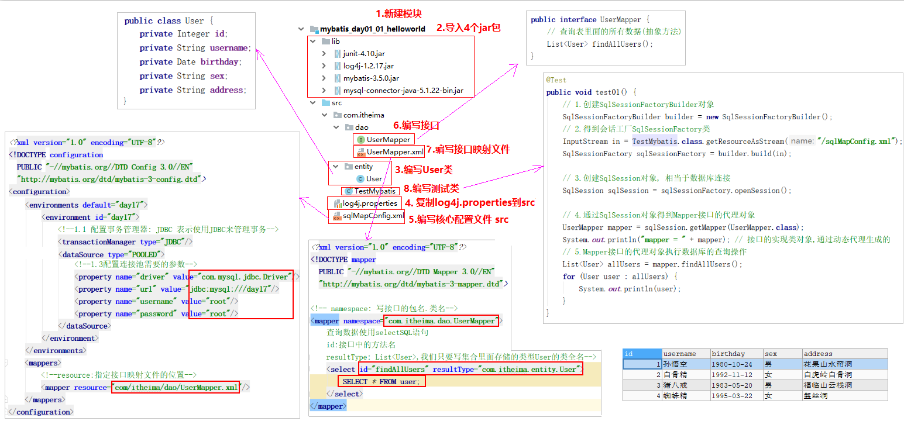

《MyBatis(01)-自定义框架-笔记》
回顾
JDBC四个核心对象
DriverManager: 注册驱动
Connection: 表示数据库的连接
Statement: 执行SQL语句的对象(小货车)
ResultSet: 结果集
JDBC操作数据库的步骤
- 注册驱动
- 获取连接
- 获取小货车
- 执行SQL语句
- 处理结果
- 释放资源
如何解决SQL注入问题
使用PreparedStatement对象.
连接池
连接池的优点: 存放在连接池中的连接可以反复使用,节省数据库资源的消耗
学习目标
能够了解什么是框架
掌握mybatis框架开发快速入门
理解自定义mybatis框架
项目名称
mybatis_day01_01_helloworld 体验mybatis第1个项目
mybatis_day01_02_framework 自定义框架
项目三层架构介绍
目标
学习项目的三层架构
分层介绍-公司中分层

软件中分层

分层的作用
- 降低层与层之间的耦合性
- 提高软件的可维护性
- 提升软件的可扩展性
小结
三层架构有哪三层?
表示层
业务层
数据访问层(DAO Data Access Object)
框架概述
我们在企业开发中为了提高开发效率会使用框架进行开发。什么是框架呢？
SSM框架
目标
学习框架的概念
框架解决了哪些问题
什么是框架
之前我们都是根据需求写出所有的相关代码麻烦，累，繁琐。框架是别人写好的代码，是对常见功能的封装，是一个半成品。我们在框架的基础上开发出成品的软件。
假如你要造一辆马车，在没有零件的情况下，你需要自己去伐木，去把木头做成木板，木棍，然后做成轮子，门，等部件，然后组装起来，很麻烦。框架就相当于现成的轮子，门等部件。我们只需要拿过来使用即可。
常见框架如：Spring，SpringMVC，Mybatis，JdbcTemplate，Bootstrap, VUE等等。

框架解决的问题
提升了开发效率
企业项目中使用框架，程序员不再需要重复造轮子，只需要专注实现业务需求，提升了开发效率。
提升了系统稳定性
一个成熟的框架，经过了在众多企业项目中的验证使用，稳定性有保障。
分层开发下常见框架
在J2EE应用中，通常把项目整体进行分层设计。有表现层、业务层、持久层。
持久层框架
MyBatis是一款优秀的持久层框架，MyBatis 避免了几乎所有的 JDBC代码和手动设置参数以及获取结果集。
关于持久层的框架，还有一个封装程度更高的框架（hibernate）。该框架相对比较重量级，以及其它各个方面的原因，目前流行程度下降了很多，企业项目中用的越来越少了。
表现层框架
SpringMVC是一种基于Java，实现了Web MVC设计模式，将Web层进行解耦。SpringMVC可以简化我们日常Web开发。
整合的框架
Spring是一个轻量级控制反转(IoC)和面向切面(AOP)的容器框架。让开发变的更简单。
小结
什么是框架?
是别人已经写好的代码,是一个半成品,对常用功能的封装
框架解决了哪些问题
- 提高开发效率
- 提升系统的稳定性
MyBatis框架介绍和下载
目标
MyBatis框架介绍
学习MyBatis下载
MyBatis框架介绍
MyBatis是Apache软件基金会下的一个开源项目，前身是iBatis框架。2010年这个项目改名为MyBatis。是一个持久层框架
MyBatis的优点
- 简单易学：不需要关注JDBC的资源获取和释放，配置几个SQL映射文件即可。
- 解除SQL与程序代码的耦合：SQL语句和代码分离，提高了可维护性。
官方网站
http://www.mybatis.org/mybatis-3/

框架包下载
连接到github地址：https://github.com/mybatis/mybatis-3/releases

小结
MyBatis框架哪一层框架？
持久层,专门来操作数据库的
MyBatis入门案例：环境的搭建
目标
了解MyBatis的开发步骤MyBatis开发环境的搭建
需求
利用MyBatis框架，从MySQL中查询所有的用户

用户表SQL
CREATE TABLE USER (
id INT PRIMARY KEY AUTO_INCREMENT,
username VARCHAR(20) NOT NULL,
birthday DATE,
sex CHAR(1) DEFAULT '男',
address VARCHAR(50)
);
INSERT INTO USER VALUES (NULL, '孙悟空','1980-10-24','男','花果山水帘洞');
INSERT INTO USER VALUES (NULL, '白骨精','1992-11-12','女','白虎岭白骨洞');
INSERT INTO USER VALUES (NULL, '猪八戒','1983-05-20','男','福临山云栈洞');
INSERT INTO USER VALUES (NULL, '蜘蛛精','1995-03-22','女','盤丝洞');
SELECT * FROM USER;MyBatis开发步骤
- 创建新模块
- 加入MyBatis和数据库驱动jar包
- 编写用户实体类（User）
- 准备核心配置文件：sqlMapConfig.xml
- 编写用户 dao 接口（UserMapper）
- 编写用户 dao 接口映射文件（UserMapper.xml）
- 编写测试代码
环境搭建
创建模块：mybatis_day01_01_helloworld
加入MyBatis相关jar包：在模块下新建lib文件夹，复制mybatis框架jar包到lib文件夹下
MyBatis框架包
MySQL数据库驱动包
log4j 日志包编写用户实体类（User）
/** 用户实体类对象 */ public class User { private Integer id; private String username; private Date birthday; private String sex; private String address; // 省略构造方法/getter/setter/toString }
配置文件
复制log4j.properties到 src 下
### 设置Logger输出级别和输出目的地 ###
log4j.rootLogger=debug, stdout
### 把日志信息输出到控制台 ###
log4j.appender.stdout=org.apache.log4j.ConsoleAppender
log4j.appender.stdout.Target=System.out
log4j.appender.stdout.layout=org.apache.log4j.SimpleLayout小结
MyBatis的环境搭建做了哪几件事情？
创建模块：mybatis_day01_01_helloworld
加入MyBatis相关jar包：在模块下新建lib文件夹，复制mybatis框架jar包到lib文件夹下
MyBatis框架包
MySQL数据库驱动包
log4j 日志包编写用户实体类（User类）
复制log4j.properties到 src下
MyBatis配置文件分类
MyBatis为了灵活，将数据库相关数据和SQL语句写到XML配置文件中。
- 核心配置文件：配置数据库的连接url，账号，密码，一般核心配置文件的名称:sqlMapConfig.xml
- 接口的映射文件：配置要执行的SQL语句，一般名称: XxxMapper.xml
MyBatis入门案例：核心配置文件sqlMapConfig.xml
目标
编写核心配置文件：sqlMapConfig.xml
复制资料\01_mybatis框架模板\sqlMapConfig.xml到src下，说明：它是mybatis框架的核心配置文件，mybatis就是靠这些信息来运行的。

<?xml version="1.0" encoding="UTF-8" ?>
<!DOCTYPE configuration
PUBLIC "-//mybatis.org//DTD Config 3.0//EN"
"http://mybatis.org/dtd/mybatis-3-config.dtd">
<configuration>
<!--可以配置多个环境，可以访问不同种类的数据库：mysql, oracle-->
<environments default="default">
<!-- 其中的一个配置环境，这个配置方案的唯一标识 -->
<environment id="default">
<!--
指定事务管理器的类型：
JDBC：使用JDBC来管理事务
-->
<transactionManager type="JDBC"/>
<!--
数据源的类型：
1. POOLED：使用mybatis创建的连接池
2. UNPOOLED：不使用连接池，每次都创建和关闭连接
-->
<dataSource type="POOLED">
<property name="driver" value="com.mysql.jdbc.Driver"/>
<property name="url" value="jdbc:mysql://localhost:3306/mybatis"/>
<property name="username" value="root"/>
<property name="password" value="root"/>
</dataSource>
</environment>
</environments>
<!--加载接口映射文件-->
<mappers>
<mapper resource="接口映射文件位置"/>
</mappers>
</configuration>小结
核心配置文件配置了4个参数:
- driver: 数据库驱动的类全名
- url: 数据库的URL
- username: 数据库账号
- password: 数据库密码
MyBatis入门案例：接口和映射文件UserMapper.xml
目标
- 编写接口
- 编写接口的映射文件：UserMapper.xml
UserMapper接口的创建
创建com.itheima.dao包，创建UserMapper接口。编写查询所有用户的方法：List<User> findAllUsers();
/**
定义DAO中方法
*/
public interface UserMapper {
/**
查询所有的用户
*/
List<User> findAllUsers();
}UserMapper.xml映射文件
在com.itheima.dao包中创建UserMapper.xml映射文件
<?xml version="1.0" encoding="UTF-8" ?>
<!DOCTYPE mapper
PUBLIC "-//mybatis.org//DTD Mapper 3.0//EN"
"http://mybatis.org/dtd/mybatis-3-mapper.dtd">
<!--namespace属性：指定DAO接口中类全名-->
<mapper namespace="com.itheima.dao.UserMapper">
<!--
id:接口中方法的名字
resultType: 返回的数据类型，如果是集合类型，这里应该指定集合中元素的类型全名
文本：SQL语句
-->
<select id="findAllUsers" resultType="com.itheima.entity.User">
select * from user;
</select>
</mapper>核心配置文件sqlMapConfig.xml
在src/sqlMapConfig.xml添加UserMapper.xml的映射
<!--加载其它的实体映射文件-->
<mappers>
<!--指定要加载的映射文件-->
<mapper resource="com/itheima/dao/UserMapper.xml"/>
</mappers>小结
- 创建UserMapper接口
- 接口中新增一个方法findAllUsers()
- 配置接口映射文件
namespace: 映射文件对应的接口的包名.接口名
id: 方法名
resultType: 方法的返回值类型
select标签主体内容: 编写SQL语句
MyBatis入门案例：测试类
目标
编写MyBatis访问数据库的Java代码
效果
开发流程
三大对象
- SqlSessionFactoryBuilder：负责构建SqlSessionFactory
- SqlSessionFactory：创建SqlSession实例的工厂
- SqlSession：用于执行SQL操作的对象
编写代码流程
- 创建SqlSessionFactoryBuilder对象
- 得到会话工厂SqlSessionFactory类
- 得到SqlSession对象
- 通过SqlSession对象得到Mapper接口的代理对象
- Mapper接口的代理对象执行数据库的查询操作
代码
package com.itheima.test;
import com.itheima.dao.UserMapper;
import com.itheima.entity.User;
import org.apache.ibatis.io.Resources;
import org.apache.ibatis.session.SqlSession;
import org.apache.ibatis.session.SqlSessionFactory;
import org.apache.ibatis.session.SqlSessionFactoryBuilder;
import java.io.IOException;
import java.io.InputStream;
import java.util.List;
public class TestUserMapper {
public static void main(String[] args) throws IOException {
// 1.得到核心配置文件的输入流
InputStream in = TestMybatis.class.getResourceAsStream("/sqlMapConfig.xml");
// 2.创建会话工厂建造类
SqlSessionFactoryBuilder builder = new SqlSessionFactoryBuilder();
// 3.创建会话工厂
SqlSessionFactory factory = builder.build(inputStream);
// 4.通过会话工厂得到会话对象
SqlSession session = factory.openSession();
// 5.由会话对象得到DAO接口的对象，由mybatis生成接口的代理对象。
UserMapper userMapper = session.getMapper(UserMapper.class);
// 6.实现CRUD
List<User> userList = userMapper.findAllUsers();
for (User user : userList) {
System.out.println(user);
}
// 7.释放资源
session.close();
}
}注：UserMapper的对象是由MyBatis生成的接口代理对象
小结
注意:在核心配置文件中要记得配置接口映射文件的位置
测试类:
package com.itheima.test;
import com.itheima.dao.UserMapper;
import com.itheima.entity.User;
import org.apache.ibatis.io.Resources;
import org.apache.ibatis.session.SqlSession;
import org.apache.ibatis.session.SqlSessionFactory;
import org.apache.ibatis.session.SqlSessionFactoryBuilder;
import org.junit.Test;
import java.io.IOException;
import java.io.InputStream;
import java.util.List;
// MyBatis测试类
public class TestMyBatis {
// 测试方法
@Test
public void testMyBatis() throws IOException {
// 1.创建SqlSessionFactoryBuilder对象
SqlSessionFactoryBuilder builder = new SqlSessionFactoryBuilder();
// 2.得到会话工厂SqlSessionFactory类
// 类路径:加载文件返回流, /表示到了src
// InputStream in = TestMyBatis.class.getResourceAsStream("/sqlMapConfig.xml");
// Resources: 这个类是MyBatis提供的,就是加载src下的资源,不要写/开头
InputStream in = Resources.getResourceAsStream("sqlMapConfig.xml");
SqlSessionFactory sqlSessionFactory = builder.build(in);
// 3.得到SqlSession对象, SqlSession相当于数据库的连接Connection
SqlSession sqlSession = sqlSessionFactory.openSession();
// 4.通过SqlSession对象得到Mapper接口的代理对象
// getMapper返回接口的实现类.(使用动态代理生成接口的实现类)
UserMapper mapper = sqlSession.getMapper(UserMapper.class);
System.out.println("mapper = " + mapper);
// 5.Mapper接口的代理对象执行数据库的查询操作
List<User> users = mapper.findAllUsers();
User userById = mapper.findUserById(2);
// 6.关闭资源
sqlSession.close();
for (User user : users) {
System.out.println(user);
}
System.out.println("userById = " + userById);
}
}=======================================练习入门案例=======================================
根据用户ID查询用户
目标
根据用户 ID 查询用户
步骤分析
编写用户UserMapper接口
配置接口映射文件UserMapper.xml
使用SqlSession来执行Mapper的方法
编写用户User的实体类
package com.itheima.entity;
import java.sql.Date;
/**
用户实体类对象 */
public class User {
private Integer id;
private String username;
private Date birthday;
private String sex;
private String address;
// 省略构造方法/getter/setter/toString
}编写用户UserMapper接口
public interface UserMapper {
/*
通过id查询到一个用户
*/
User findUserById(Integer id);
}修改UserMapper.xml文件
在com.itheima.dao包下修改UserMapper.xml文件，添加如下代码：
<?xml version="1.0" encoding="UTF-8"?>
<!DOCTYPE mapper
PUBLIC "-//mybatis.org//DTD Mapper 3.0//EN"
"http://mybatis.org/dtd/mybatis-3-mapper.dtd">
<mapper namespace="com.itheima.dao.UserMapper">
<!--parameterType:方法参数的类型-->
<!--resultType:方法返回值类型-->
<!--#{}：相当于？占位符，#{id}:得到方法的id参数放在这个位置-->
<select id="findUserById" parameterType="java.lang.Integer" resultType="com.itheima.entity.User">
SELECT * FROM USER WHERE id=#{id};
</select>
</mapper>测试
public class TestUserMapper {
@Test
public void test01() throws IOException {
InputStream in = Resources.getResourceAsStream("sqlMapConfig.xml");
SqlSessionFactoryBuilder builder = new SqlSessionFactoryBuilder();
SqlSessionFactory sessionFactory = builder.build(in);
SqlSession sqlSession = sessionFactory.openSession();
UserMapper mapper = sqlSession.getMapper(UserMapper.class);
User userById = mapper.findUserById(2);
System.out.println("userById = " + userById);
}
}小结
MyBatis如何取到方法的参数放到sql中

#{xx}: 先使用?占位, 后续将具体值赋值给?
修改数据
目标
通过id修改用户数据
实现步骤
- 在接口中编写一个修改用户的方法
- 在接口映射文件中编写相应的SQL语句
- 测试
在接口中编写一个修改用户的方法
/**
* 根据用户Id修改用户
*/
void updateUser(User user);在接口映射文件中编写相应的SQL语句
使用update标签：放置修改sql语句，根据用户id修改用户其它属性
<!--
update标签更新记录
id: 方法名字
parameterType: 参数的类型
-->
<update id="updateUser" parameterType="com.itheima.entity.User">
UPDATE user set username=#{username}, birthday=#{birthday}, sex=#{sex}, address=#{address} where id=#{id};
</update>测试
- 修改6号用户的名字，生日，性别，地址
- 更新用户对象
// 更新记录
@Test
public void testUpdateUser() {
User user = new User(3, "狐狸精",Date.valueOf("1996-05-10"),"女","狐狸洞");
userMapper.updateUser(user);
}事务的处理：如果Java程序代码执行成功，但是数据库中并没有新增记录。原因是没有提交事务，在对数据库的更新操作中（增、删、改）要求提交事务。
提交事务
方式一：手动提交事务
sqlSession.commit(); // 方式一：手动提交事务方式二：自动提交事务
sqlSession = factory.openSession(true); // 方式二：自动提交说明：如果在同一个方法中，有多个数据库操作，需要使用手动提交的方式。
如果SQL语句每条都是独立的，使用自动提交
如果是多条SQL语句组成一个功能，手动提交
小结
参数是自定义类的时候，占位符#{变量名}是什么意思？
取对象里面的成员变量值
开启事务有哪两种方式？
手动提交： sqlSession.commit();
自动提交：factory.openSession(true);
删除数据
目标
根据id删除数据
效果
实现步骤
- 在接口中编写一个删除用户的方法
- 在接口映射文件中编写相应的SQL语句
- 测试
在接口中编写一个删除用户的方法
/**
* 根据用户id删除用户
*/
void deleteUser(int id);在接口映射文件中编写相应的SQL语句
delete标签：放置删除sql语句，根据用户Id删除用户
<!--
delete标签用于删除记录
-->
<delete id="deleteUser" parameterType="int">
DELETE from user where id=#{id}
</delete>测试
删除1号用户
// 删除记录
@Test
public void testDeleteUser() {
userMapper.deleteUser(11);
}小结
删除数据的步骤:
- 在接口中编写删除的方法
- 在接口映射文件中编写删除的SQL语句
- 测试
新增数据
目标
- 添加用户
效果

实现步骤
- 在接口定义新增用户方法
- 配置接口映射文件SQL语句
- 测试
在接口定义新增用户方法
/**
* 新增用户
*/
void addUser(User user);配置mapper映射文件
- 新增用户使用insert标签
- 放置新增sql语句，参数类型使用User
- 占位符使用user对象的各个#{属性名}
<!--
insert标签：表示添加记录
id: 方法名
如果参数是实体类，#{属性名}
-->
<insert id="addUser" parameterType="com.itheima.entity.User">
INSERT INTO user VALUES (null, #{username}, #{birthday},#{sex},#{address})
</insert>测试
new User(null,"白龙马", Date.valueOf("2019-05-01"), "男", "东海龙宫");自定义MyBatis：编写SqlSession
目标
编写SqlSession
复制入门案例模块，修改模块名为：mybatis_day01_02_framework，导入模块
删除配置文件中的DTD约束，不然DOM解析会联网，会失败
编写SqlSession类
- 新建
com.itheima.mybatis包 - 在
com.itheima.mybatis创建SqlSession类 SqlSession中编写getMapper获取Mapper的代理对象
SqlSession sqlSession = new SqlSession();
UserMapper userMapper = session.getMapper(UserMapper.class);import java.lang.reflect.Proxy;
// SqlSession的作用是获取Mapper的代理对象
public class SqlSession {
/*
Object newProxyInstance(ClassLoader loader, 类加载器
Class<?>[] interfaces, 接口
InvocationHandler h) 调用处理器
*/
public <T> T getMapper(Class<T> type) {
// 生成参数的代理对象
return (T)Proxy.newProxyInstance(
this.getClass().getClassLoader(),
new Class[] {type},
new MyInvocationHandler()
);
}
}Mapper的代理对象是用来执行SQL语句的
List<User> users = userMapper.findAllUsers();我们先固定写一些数据
public class MyInvocationHandler implements InvocationHandler {
@Override
public Object invoke(Object proxy, Method method, Object[] args) throws Throwable {
// 返回查询数据
ArrayList<User> list = new ArrayList<>();
list.add(new User(2, "张三", new Date(100), "男", "广州"));
list.add(new User(3, "李四", new Date(200), "女", "深圳"));
return list;
}
}小结
说出SqlSession的作用
SqlSession中有一个getMapper(接口.class)，这个方法的作用就是生成接口的实现类
自定义MyBatis：解析sqlMapConfig.xml核心配置文件
目标
解析核心配置文件sqlMapConfig.xml，创建连接池
分析
实现步骤
- 使用dom4j解析sqlMapConfig.xml文件
- 获取数据库相关信息
- 创建Druid连接池
Configuration代码
package com.itheima.mybatis;
import com.alibaba.druid.pool.DruidDataSource;
import org.dom4j.Document;
import org.dom4j.DocumentException;
import org.dom4j.Element;
import org.dom4j.Node;
import org.dom4j.io.SAXReader;
import javax.sql.DataSource;
import java.io.InputStream;
import java.util.HashMap;
import java.util.List;
import java.util.Map;
public class Configuration {
// 数据源
private DataSource dataSource;
public Configuration() {
// 加载sqlMapConfig.xml中的数据库链接参数
// 得到输入流
InputStream in = Configuration.class.getResourceAsStream("/sqlMapConfig.xml");
// DOM解析
// 得到文档对象
SAXReader saxReader = new SAXReader();
try {
Document document = saxReader.read(in);
// 加载数据库连接参数
// 获得数据库连接字符串：driver
Element driverElement = (Element) document.selectSingleNode("//property[@name='driver']");
driver = driverElement.attributeValue("value");
// 获得数据库连接字符串：url
Element urlElement = (Element) document.selectSingleNode("//property[@name='url']");
url = urlElement.attributeValue("value");
// 获得数据库连接字符串：username
Element usernameElement = (Element) document.selectSingleNode("//property[@name='username']");
username = usernameElement.attributeValue("value");
// 获得数据库连接字符串：password
Element passwordElement = (Element) document.selectSingleNode("//property[@name='username']");
password = passwordElement.attributeValue("value");
// 创建数据源
DruidDataSource ds = new DruidDataSource();
ds.setDriverClassName(driver);
ds.setUrl(url);
ds.setUsername(username);
ds.setPassword(password);
this.dataSource = ds;
// TODO:加载接口映射文件
} catch (DocumentException e) {
e.printStackTrace();
}
}
}小结
Configuration类做了什么事情？
自定义MyBatis：设计Mapper类
目标
编写Mapper类封装UserMapper.xml数据
分析UserMapper.xml
步骤
- 创建Mapper实体类：包含2个属性：resultType,sql
- 生成get和set方法
代码
package com.itheima.mybatis;
/**
用来封装映射文件的实体类
一个Mapper对象代表一条要操作的查询语句对象
*/
public class Mapper {
private String resultType; // 封装的数据类型
private String sql; // 要执行的SQL语句
// 省略getter/setter
}小结
Mapper实体类中有哪几个属性？
2个属性
private String resultType; // 方法的返回值类型
private String sql; // 要执行的SQL语句自定义MyBatis：编写Configuration解析接口映射文件
目标
解析UserMapper.xml并且封装到Mapper类中
分析
实现步骤
读取mapper中的resource属性值
解析resource对应的XML文件，得到namespace,id,resultType,sql的值
封装成Mapper对象，保存到Map集合中
代码
package com.itheima.mybatis;
import com.alibaba.druid.pool.DruidDataSource;
import org.dom4j.Document;
import org.dom4j.DocumentException;
import org.dom4j.Element;
import org.dom4j.Node;
import org.dom4j.io.SAXReader;
import javax.sql.DataSource;
import java.io.InputStream;
import java.util.HashMap;
import java.util.List;
import java.util.Map;
public class Configuration {
// 数据源
private DataSource dataSource;
// 封装其它的映射文件中属性
private Map<String, Mapper> mappers = new HashMap<>();
public Configuration() {
// 加载sqlMapConfig.xml中的数据库链接参数
// 得到输入流
InputStream in = Configuration.class.getResourceAsStream("/sqlMapConfig.xml");
// DOM解析
// 得到文档对象
SAXReader saxReader = new SAXReader();
try {
Document document = saxReader.read(in);
// 加载数据库连接参数
// 获得数据库连接字符串：driver
Element driverElement = (Element) document.selectSingleNode("//property[@name='driver']");
driver = driverElement.attributeValue("value");
// 获得数据库连接字符串：url
Element urlElement = (Element) document.selectSingleNode("//property[@name='url']");
url = urlElement.attributeValue("value");
// 获得数据库连接字符串：username
Element usernameElement = (Element) document.selectSingleNode("//property[@name='username']");
username = usernameElement.attributeValue("value");
// 获得数据库连接字符串：password
Element passwordElement = (Element) document.selectSingleNode("//property[@name='username']");
password = passwordElement.attributeValue("value");
// 创建数据源
DruidDataSource ds = new DruidDataSource();
ds.setDriverClassName(driver);
ds.setUrl(url);
ds.setUsername(username);
ds.setPassword(password);
this.dataSource = ds;
// 加载接口映射文件
Element mapperElement = (Element) document.selectSingleNode("//mapper[@resource]");
// com/itheima/dao/UserMapper.xml
String resource = mapperElement.attributeValue("resource");
InputStream mapperIn = Configuration.class.getResourceAsStream("/" + resource);
// DOM解析
SAXReader reader = new SAXReader();
Document mapperDocument = reader.read(mapperIn);
// rootElement：<mapper namespace="com.itheima.dao.UserMapper">
Element rootElement = mapperDocument.getRootElement();
String namespace = rootElement.attributeValue("namespace");
/* <select id="findAllUsers" resultType="com.itheima.entity.User">
select * from user;
</select>*/
Element select = rootElement.element("select");
// 获得id属性值
String id = select.attributeValue("id");
// 获得返回值类型
String resultType = select.attributeValue("resultType");
// 获得标签体内容：sql语句字符串
String sql = select.getTextTrim();
// 创建Mapper对象
Mapper mapper = new Mapper(namespace, id, resultType, sql);
// 将Mapper对象添加到集合mappers中
mappers.put(namespace + "." + id, mapper);
} catch (DocumentException e) {
e.printStackTrace();
}
}
// 省略getter/setter
}小结
hashMap中键和值分别是什么？
键：
值：
自定义MyBatis：封装查询的结果集
目标
- 使用JDBC从数据库中查询数据
- 使用反射来实例化查询结果对象，并且封装一条记录到对象中，添加对象到集合中
步骤
通过连接池得到连接对象
使用JDBC访问数据库执行SQL语句
处理结果集中的每条记录
使用反射将每条记录封装成一个对象
关闭资源
代码
package com.itheima.mybatis;
import java.lang.reflect.Field;
import java.lang.reflect.InvocationHandler;
import java.lang.reflect.Method;
import java.sql.*;
import java.util.ArrayList;
import java.util.List;
// Mapper的代理对象是用来执行SQL语句的
public class MyInvocationHandler implements InvocationHandler {
@Override
public Object invoke(Object proxy, Method method, Object[] args) throws Throwable {
// 去数据库查询数据返回
String methodName = method.getName();
// 得到这个方法声明是的Class对象
String className = method.getDeclaringClass().getName();// 得到类全名
String allName = className + "." + methodName;
System.out.println("allName = " + allName);
// 通过键找到值,mapper对象
Configuration configuration = new Configuration();
Mapper mapper = configuration.getMappers().get(allName);
String sql = mapper.getSql();
String resultTypeString = mapper.getResultType(); // com.itheima.entity.User
Class<?> resultType = Class.forName(resultTypeString);
// 执行SQL
// 1.通过连接池得到连接对象
DruidDataSource dds = configuration.getDds();
Connection conn = dds.getConnection();
PreparedStatement pstmt = conn.prepareStatement(sql);
// 2.使用JDBC访问数据库执行SQL语句
ResultSet rs = pstmt.executeQuery();
// 3.处理结果集中的每条记录
ArrayList list = new ArrayList();
// 4.使用反射将每条记录封装成一个对象
while (rs.next()) {
// 1.创建对象
Object user = resultType.newInstance();
Field[] fields = resultType.getDeclaredFields();
for (Field field : fields) {
field.setAccessible(true);
// 获取成员变量名
String name = field.getName();
// 获取字段值
Object value = rs.getObject(name);
field.set(user, value);
}
// 5.将对象添加到集合中
list.add(user);
}
// 6.关闭资源
rs.close();
pstmt.close();
conn.close();
return list;
}
}小结
结果是如何封装的?
使用反射对结果进行封装.为的是扩展性,兼容所有的类
将查询结果中的一条记录转成一个对象,使用反射给成员变量赋值
Debug自定义MyBatis流程


学习总结
能够配置接口映射文件
<?xml version="1.0" encoding="UTF-8"?> <!DOCTYPE mapper PUBLIC "-//mybatis.org//DTD Mapper 3.0//EN" "http://mybatis.org/dtd/mybatis-3-mapper.dtd"> <mapper namespace="com.itheima.dao.UserMapper"> <select id="findAllUsers" resultType="com.itheima.entity.User"> SELECT * FROM user; </select> </mapper> namespace: 包名.接口名 id: 方法名 resultType: 方法的返回值类型 标签主体内容: SQL语句
能够配置主(核心)配置文件
<?xml version="1.0" encoding="UTF-8"?> <!DOCTYPE configuration PUBLIC "-//mybatis.org//DTD Config 3.0//EN" "http://mybatis.org/dtd/mybatis-3-config.dtd"> <configuration> <environments default="mysql"> <environment id="mysql"> <transactionManager type="JDBC"/> <dataSource type="POOLED"> <!--1.3配置连接池需要的参数--> <property name="driver" value="com.mysql.jdbc.Driver"/> <property name="url" value="jdbc:mysql://localhost:3306/day20"/> <property name="username" value="root"/> <property name="password" value="root"/> </dataSource> </environment> </environments> <mappers> <mapper resource="com/itheima/dao/UserMapper.xml"/> </mappers> </configuration> driver: 数据库的驱动类名全名 url: 数据库的URL username: 数据库的用户名 password: 数据库的密码 mapper标签的resource: 接口映射文件的路径
能够配置mybatis的环境

能够使用MyBatis的基本增删改查
select标签: 表示查询的SQL update标签: 表示修改的SQL delete标签: 表示删除的SQL insert标签: 表示添加的SQL